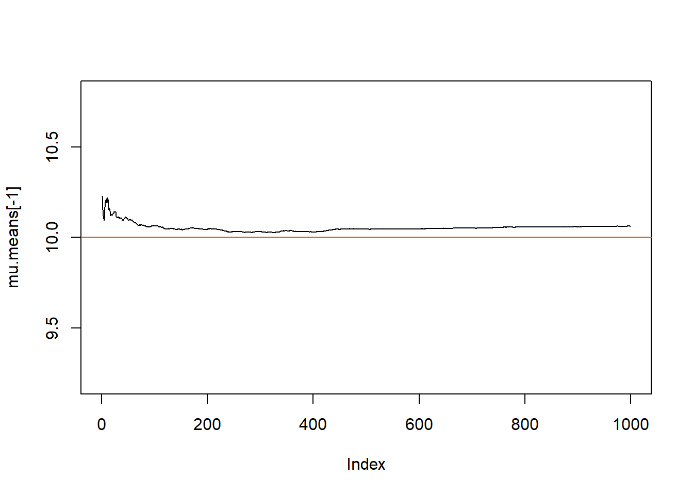
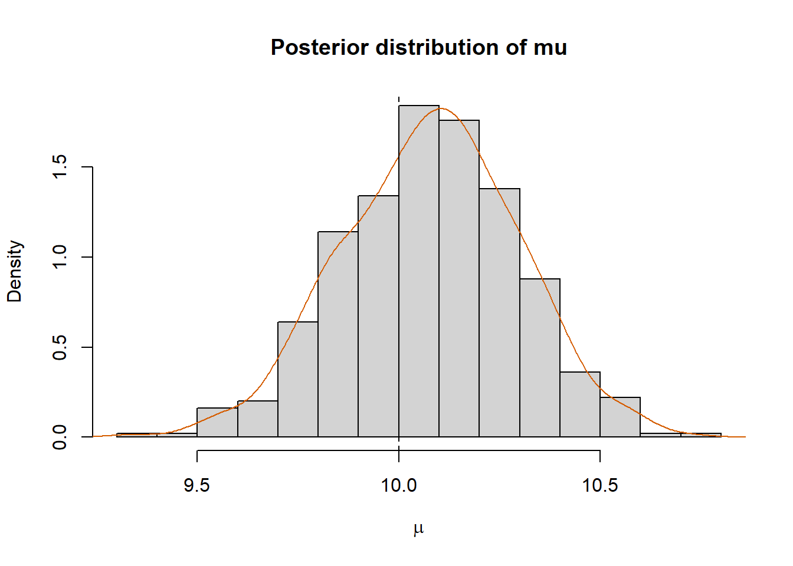
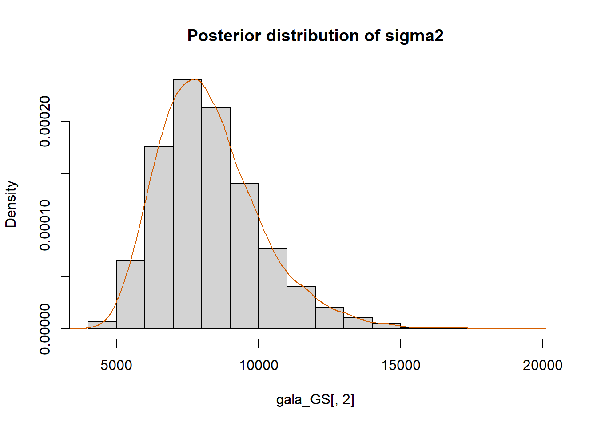
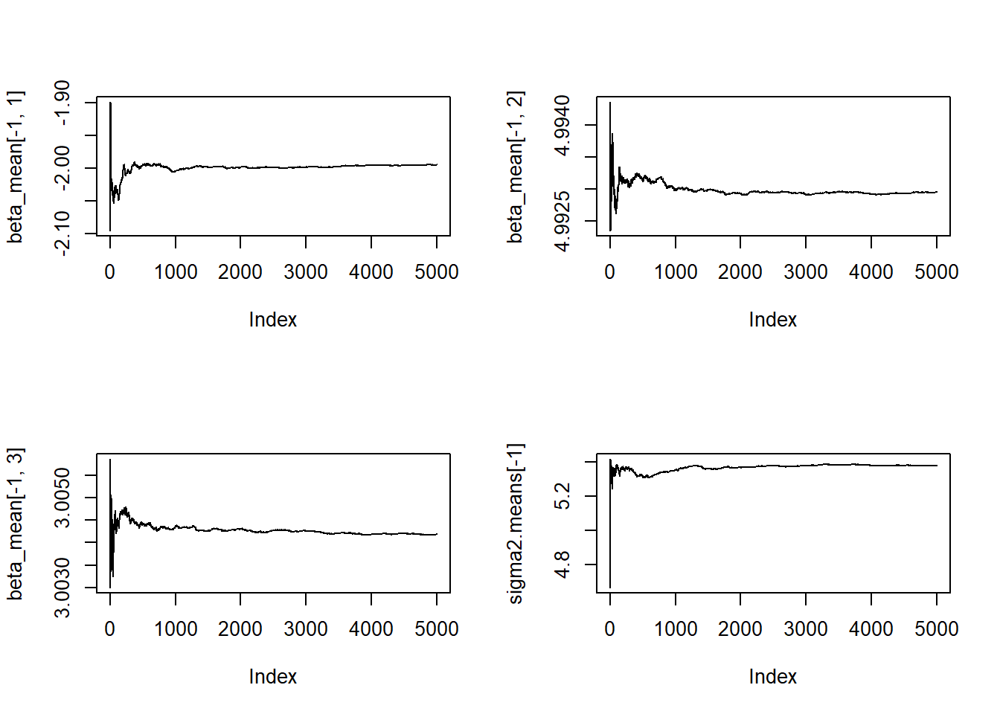

mu.true <- 10
sigma2.true <- 5
n <- 100Script 3 - MCMC - Gibbs sampling
In this section we show two Gibbs sampler: the first one aims to estimate the parameters \((\mu, \sigma^2)\) of a Normal likelihood, whereas the second one estimates the the parameters of a linear regression model.
Gibbs Sampling for the Mean and Variance of a Normal Distribution
In a simulation framework, we need to specify the true values of the parameters generating the data.
Then, we can generate a sample…
set.seed(42)
y <- rnorm(n, mu.true, sqrt(sigma2.true))
ybar <- mean(y); ybar[1] 10.07271… and set hyperparameters:
mu0 <- 0
sigma2.0 <- 1000
alpha <- 10
beta <- 10The prior expectation is
beta/(alpha-1)[1] 1.111111and the prior variance is:
(beta^2)/((alpha-1)*(alpha-2))[1] 1.388889Initialization:
We initialize each element by drawing a value from the corresponding prior:
B <- 1000
mu.chain <- numeric(B)
sigma2.chain <- numeric(B)
set.seed(42)
mu.chain[1] <- rnorm(1, mu0, sqrt(sigma2.0))
sigma2.chain[1] <- 1/rgamma(1, alpha, rate = beta)Then, we can implement the Gibbs sampling by generating each parameter from its full-conditional distribution:
set.seed(42)
for(b in 2:B){
# Draw mu from the F.C.
mu.chain[b] <-
rnorm(1,
(n*ybar*sigma2.0 + sigma2.chain[b-1])/(n*sigma2.0+sigma2.chain[b-1]),
sqrt((sigma2.chain[b-1]*sigma2.0)/(n*sigma2.0+sigma2.chain[b-1])))
# Draw sigma2 from the F.C.
sigma2.chain[b] <-
1/rgamma(1, alpha + n/2,
rate = beta + .5*sum((y-mu.chain[b])^2))
}plot(mu.chain, sigma2.chain, pch=20)
points(mu.true, sigma2.true, col="red", pch=20)We can now generate some diagnostic plots.
# Traceplots:
par(mfrow=c(2,1))
plot(mu.chain[-1], pch=20, type="l")
plot(sigma2.chain[-1], pch=20, type="l")par(mfrow=c(1,1))mu.means <- numeric(B)
sigma2.means <- numeric(B)
mu.means[1] <- mu.chain[1]
sigma2.means[1] <- sigma2.chain[1]
for(b in 2:B){
mu.means[b] <- mean(mu.chain[2:b])
sigma2.means[b] <- mean(sigma2.chain[2:b])
}
par(mfrow=c(2,1))
plot(mu.means[-1], pch=20, type="l")
abline(h=mu.true, col="red")
plot(sigma2.means[-1], pch=20, type="l")
abline(h=sigma2.true, col="red")
par(mfrow=c(1,1))par(mfrow=c(2,1))
acf(mu.chain)
acf(sigma2.chain)par(mfrow=c(1,1))Once we have a chain for each parameter, we need to remove the warm-up (i.e., the part of the chains for which we cannot assume the convergence to the stationary distribution).
warm_perc <- .5
mu.new <- mu.chain[round(B*warm_perc+1):B]
sigma2.new <- sigma2.chain[round(B*warm_perc+1):B]
par(mfrow=c(2,1))
plot(mu.new, pch=20, type="l")
plot(sigma2.new, pch=20, type="l")par(mfrow=c(1,1))The new vectors can be used to compute estimates, CSs, and probabilities:
mean(mu.new)[1] 10.07781quantile(mu.new, probs = c(.025, .975)) 2.5% 97.5%
9.660985 10.498000 mean(sigma2.new)[1] 4.710458quantile(sigma2.new, probs = c(.025, .975)) 2.5% 97.5%
3.694687 6.045622 mean(mu.new > 10)[1] 0.648par(mfrow=c(2,1))
hist(mu.new, prob=T, xlab=expression(mu),
main="Posterior distribution of mu")
lines(density(mu.new), col="red")
hist(sigma2.new, prob=T, xlab=expression(sigma2),
main="Posterior distribution of sigma2")
lines(density(sigma2.new), col="red")
par(mfrow=c(1,1))plot(mu.new, sigma2.new, pch = 20)
We can define a function to fit this Gibbs sampler more easily on new data.
normal_GS <- function(y, B = 5000,
mu0 = 0, sigma2.0 = 1000,
alpha = 10, beta = 10,
warm_perc = .5, seed=42){
mu.chain <- numeric(B)
sigma2.chain <- numeric(B)
ybar <- mean(y)
n <- length(y)
# Initialization:
set.seed(seed)
mu.chain[1] <- rnorm(1, mu0, sqrt(sigma2.0))
sigma2.chain[1] <- 1/rgamma(1, alpha, rate = beta)
for(b in 2:B){
# Draw mu from the F.C.
mu.chain[b] <-
rnorm(1,
(n*ybar*sigma2.0 + sigma2.chain[b-1])/(n*sigma2.0+sigma2.chain[b-1]),
sqrt((sigma2.chain[b-1]*sigma2.0)/(n*sigma2.0+sigma2.chain[b-1])))
# Draw sigma2 from the F.C.
sigma2.chain[b] <-
1/rgamma(1, alpha + n/2,
rate = beta + .5*sum((y-mu.chain[b])^2))
}
mu.new <- mu.chain[round(B*warm_perc+1):B]
sigma2.new <- sigma2.chain[round(B*warm_perc+1):B]
return(cbind(mu.chain = mu.new, sigma2.chain = sigma2.new))
}Gala dataset (I)
library(faraway)Warning in check_dep_version(): ABI version mismatch:
lme4 was built with Matrix ABI version 1
Current Matrix ABI version is 0
Please re-install lme4 from source or restore original 'Matrix' packagedata(gala)
str(gala)'data.frame': 30 obs. of 7 variables:
$ Species : num 58 31 3 25 2 18 24 10 8 2 ...
$ Endemics : num 23 21 3 9 1 11 0 7 4 2 ...
$ Area : num 25.09 1.24 0.21 0.1 0.05 ...
$ Elevation: num 346 109 114 46 77 119 93 168 71 112 ...
$ Nearest : num 0.6 0.6 2.8 1.9 1.9 8 6 34.1 0.4 2.6 ...
$ Scruz : num 0.6 26.3 58.7 47.4 1.9 ...
$ Adjacent : num 1.84 572.33 0.78 0.18 903.82 ...help(gala)avvio in corso del server httpd per la guida ... fattoy <- gala$Species
gala_GS <- normal_GS(y, B = 10000)
str(gala_GS) num [1:5000, 1:2] 92.7 44.4 32.8 24.4 103 ...
- attr(*, "dimnames")=List of 2
..$ : NULL
..$ : chr [1:2] "mu.chain" "sigma2.chain"head(gala_GS) mu.chain sigma2.chain
[1,] 92.71002 9974.745
[2,] 44.36107 8010.302
[3,] 32.81073 9962.350
[4,] 24.37675 10741.804
[5,] 103.04801 7786.621
[6,] 63.96422 7512.084plot(gala_GS, pch = 20)hist(gala_GS[,1], prob = T,
main="Posterior distribution of mu")
lines(density(gala_GS[,1]), col="red")hist(gala_GS[,2], prob = T,
main="Posterior distribution of sigma2")
lines(density(gala_GS[,2]), col="red")
colMeans(gala_GS) mu.chain sigma2.chain
67.34122 8294.29403 t(apply(gala_GS, 2, function(x) quantile(x, probs=c(.025, .975)))) 2.5% 97.5%
mu.chain 37.53342 96.70556
sigma2.chain 5465.86469 12619.92813mean(gala_GS[,1] > 70)[1] 0.429mean(gala_GS[,1] > 70 & gala_GS[,2] < 5500)[1] 0.0174Gibbs Sampling for the parameters of a Linear Regression Model
rm(list=ls())
# True values:
beta <- c(-2,5,3)
sigma2 <- 6# Generating data:
n <- 100
set.seed(42)
X <- matrix(rnorm(2*n, 0, 50), ncol=2)
X <- cbind(rep(1,n), X)
y <- as.numeric(X%*%beta + rnorm(n, 0, sqrt(sigma2)))Classical OLS/ML estimates:
summ <- summary(lm(y~X[,2]+X[,3])); summ
Call:
lm(formula = y ~ X[, 2] + X[, 3])
Residuals:
Min 1Q Median 3Q Max
-6.3114 -1.6213 -0.2021 1.5605 6.1741
Coefficients:
Estimate Std. Error t value Pr(>|t|)
(Intercept) -1.995674 0.249606 -7.995 2.75e-12 ***
X[, 2] 4.992960 0.004795 1041.303 < 2e-16 ***
X[, 3] 3.004178 0.005522 543.997 < 2e-16 ***
---
Signif. codes: 0 '***' 0.001 '**' 0.01 '*' 0.05 '.' 0.1 ' ' 1
Residual standard error: 2.483 on 97 degrees of freedom
Multiple R-squared: 0.9999, Adjusted R-squared: 0.9999
F-statistic: 7.085e+05 on 2 and 97 DF, p-value: < 2.2e-16beta0 <- rep(0,3)
Sigma0 <- 100*diag(3)
a0 <- 10
b0 <- 10# Prior Expectation for sigma2
b0/(a0-1)[1] 1.111111# Prior Variance for sigma2
(b0^2)/((a0-1)*(a0-2))[1] 1.388889B <- 5000
beta.chain <- matrix(NA, ncol=3, nrow=B)
sigma2.chain <- numeric(B)
beta.chain[1,] <- rep(0,3)
sigma2.chain[1] <- 1Gibbs sampling:
library(MASS)
for(b in 2:B){
Sigma.n <- solve(solve(Sigma0) + (t(X)%*%X)/sigma2.chain[b-1])
beta.n <- Sigma.n %*% ((solve(Sigma0)%*%beta0) + (t(X)%*%y)/sigma2.chain[b-1])
beta.chain[b,] <- mvrnorm(n=1, mu=beta.n, Sigma=Sigma.n)
sigma2.chain[b] <-
1/rgamma(1, a0 + .5*n,
rate = b0 +
0.5*(t(y-X%*%beta.chain[b,])%*%(y-X%*%beta.chain[b,])))
}Diagnostic plots:
# Traceplots:
par(mfrow=c(2,2))
plot(beta.chain[,1], pch=20, type="l");abline(h=beta[1], col="red")
plot(beta.chain[,2], pch=20, type="l");abline(h=beta[2], col="red")
plot(beta.chain[,3], pch=20, type="l");abline(h=beta[3], col="red")
plot(sigma2.chain, pch=20, type="l");abline(h=sigma2, col="red")par(mfrow=c(1,1))
par(mfrow=c(2,2))
plot(beta.chain[-1,1], pch=20, type="l");abline(h=beta[1], col="red")
plot(beta.chain[-1,2], pch=20, type="l");abline(h=beta[2], col="red")
plot(beta.chain[-1,3], pch=20, type="l");abline(h=beta[3], col="red")
plot(sigma2.chain[-1], pch=20, type="l");abline(h=sigma2, col="red")
par(mfrow=c(1,1))beta_mean <- matrix(NA, ncol = 3, nrow = nrow(beta.chain))
sigma2.means <- numeric(length(sigma2.chain))
beta_mean[1,] <- beta.chain[1,]
sigma2.means[1] <- sigma2.chain[1]
for(b in 2:nrow(beta.chain)){
beta_mean[b,1] <- mean(beta.chain[2:b,1])
beta_mean[b,2] <- mean(beta.chain[2:b,2])
beta_mean[b,3] <- mean(beta.chain[2:b,3])
sigma2.means[b] <- mean(sigma2.chain[2:b])
}
par(mfrow=c(2,2))
plot(beta_mean[-1,1], pch=20, type="l")
plot(beta_mean[-1,2], pch=20, type="l")
plot(beta_mean[-1,3], pch=20, type="l")
plot(sigma2.means[-1], pch=20, type="l")
par(mfrow=c(1,1))
acf(beta_mean[,1])acf(beta_mean[,2])acf(beta_mean[,3])acf(sigma2.means)# Removing the warmu-up:
warm_perc <- .5
beta.new <- beta.chain[round(B*warm_perc+1):B,]
sigma2.new <- sigma2.chain[round(B*warm_perc+1):B]
# Computing estimates:
colMeans(beta.new)[1] -1.990287 4.992966 3.004100mean(sigma2.new)[1] 5.379681# Histogram and kernel estimate:
par(mfrow=c(2,2))
hist(beta.new[,1], prob=T, xlab=expression(beta0),
main="Posterior distribution of beta0")
lines(density(beta.new[,1]), col="red")
##############################################
hist(beta.new[,2], prob=T, xlab=expression(beta1),
main="Posterior distribution of beta1")
lines(density(beta.new[,2]), col="red")
##############################################
hist(beta.new[,3], prob=T, xlab=expression(beta2),
main="Posterior distribution of beta2")
lines(density(beta.new[,3]), col="red")
##############################################
hist(sigma2.new, prob=T, xlab=expression(sigma2),
main="Posterior distribution of sigma2")
lines(density(sigma2.new), col="red")
par(mfrow=c(1,1))round(var(beta.new), 5) [,1] [,2] [,3]
[1,] 0.05480 -3e-05 0.00011
[2,] -0.00003 2e-05 0.00000
[3,] 0.00011 0e+00 0.00003round((2.483^2)*summ$cov.unscaled,5) (Intercept) X[, 2] X[, 3]
(Intercept) 0.06231 -4e-05 0.00013
X[, 2] -0.00004 2e-05 0.00000
X[, 3] 0.00013 0e+00 0.00003Defining a function:
rm(list=ls())
LM_GS <- function(y, X, B = 5000,
beta0 = rep(0, ncol(X)),
Sigma0 = diag(ncol(X)),
a0 = 10, b0 = 10, warm_perc = .5, seed=42){
beta.chain <- matrix(NA, ncol=ncol(X), nrow=B)
sigma2.chain <- numeric(B)
n <- length(y)
# Initialization:
beta.chain[1,] <- rep(0, ncol(X))
sigma2.chain[1] <- 1
library(MASS)
for(b in 2:B){
Sigma.n <- solve(solve(Sigma0) + (t(X)%*%X)/sigma2.chain[b-1])
beta.n <- Sigma.n %*% ((solve(Sigma0)%*%beta0) + (t(X)%*%y)/sigma2.chain[b-1])
beta.chain[b,] <- mvrnorm(n=1, mu=beta.n, Sigma=Sigma.n)
sigma2.chain[b] <-
1/rgamma(1, a0 + .5*n,
rate = b0 +
0.5*(t(y-X%*%beta.chain[b,])%*%(y-X%*%beta.chain[b,])))
}
beta.new <- beta.chain[round(B*warm_perc+1):B,]
sigma2.new <- sigma2.chain[round(B*warm_perc+1):B]
return(list(beta = beta.new, sigma2 = sigma2.new))
}Gala dataset (II)
# Definition of y and X:
y <- gala$Species
X <- model.matrix(Species ~ ., data = gala[,-2])
# Fitting the model:
lm_gala <- LM_GS(y, X)
str(lm_gala)List of 2
$ beta : num [1:2500, 1:6] -0.685 0.788 -0.497 0.317 -0.501 ...
$ sigma2: num [1:2500] 1677 2015 1942 1978 2534 ...# Extracting the elements of the chain:
betas <- lm_gala$beta
colnames(betas) <- colnames(X)
sigma2 <- lm_gala$sigma2
colMeans(betas)(Intercept) Area Elevation Nearest Scruz Adjacent
0.02312137 -0.02602818 0.32983671 -0.00566936 -0.20657747 -0.07616102 t(apply(betas, 2, function(x) quantile(x, probs=c(.025, .975)))) 2.5% 97.5%
(Intercept) -1.90212462 1.943814977
Area -0.05552613 0.003312421
Elevation 0.26572467 0.392750020
Nearest -1.14952611 1.231034257
Scruz -0.48552725 0.070630919
Adjacent -0.09987118 -0.051690537mean(sigma2)[1] 2049.94cov(betas) (Intercept) Area Elevation Nearest
(Intercept) 0.9794540448 5.792634e-04 -0.0023153428 0.022938584
Area 0.0005792634 2.288658e-04 -0.0003786192 0.001363050
Elevation -0.0023153428 -3.786192e-04 0.0010441561 -0.004669386
Nearest 0.0229385837 1.363050e-03 -0.0046693862 0.379999581
Scruz -0.0069543359 3.510182e-04 -0.0010582424 -0.050119632
Adjacent 0.0005363519 6.997214e-05 -0.0002496542 0.001960838
Scruz Adjacent
(Intercept) -6.954336e-03 5.363519e-04
Area 3.510182e-04 6.997214e-05
Elevation -1.058242e-03 -2.496542e-04
Nearest -5.011963e-02 1.960838e-03
Scruz 1.879864e-02 -8.340723e-05
Adjacent -8.340723e-05 1.564167e-04